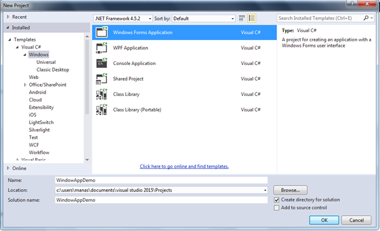
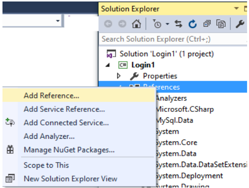
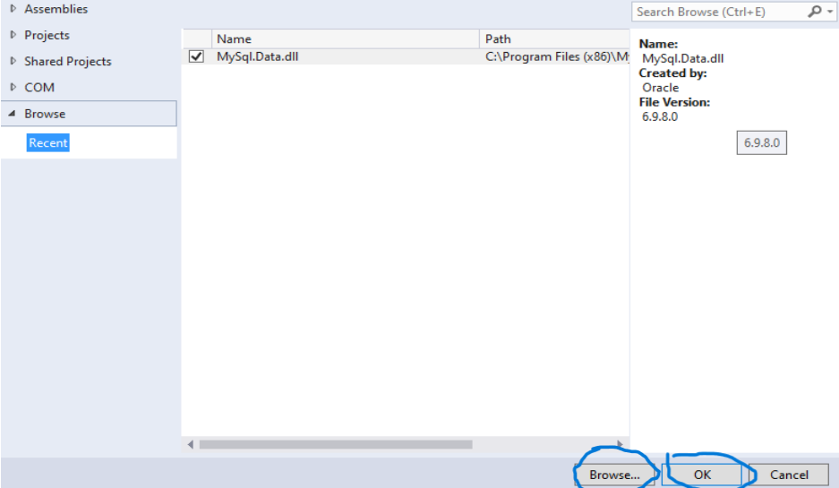
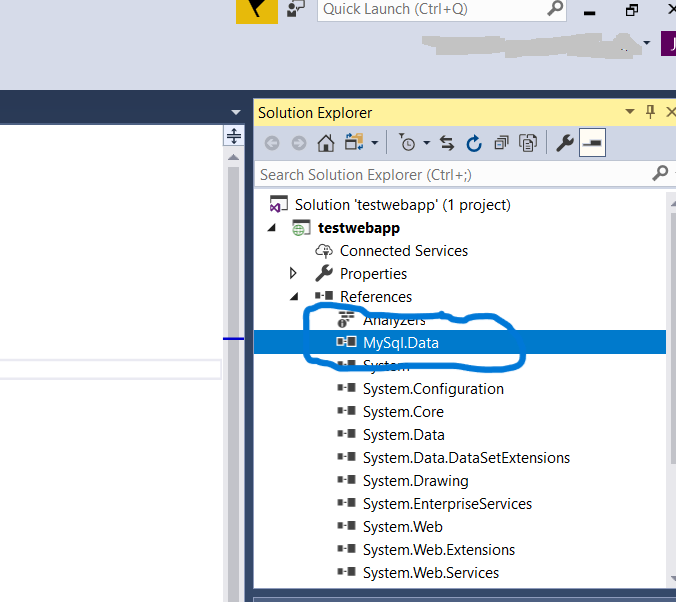
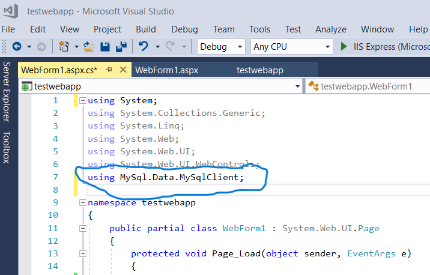

تحميل الملف Mysql.Data تحميل
الخطوة الاولى :
الخطوة الثانية :
انشاء مشرع جديد windos dorm applction

الخطوة الثالثة :
انشاء قاعدة بيانات جديده
CREATE DATABASE my_database;
يمكننك تسمية قاعدة البيانات الخاصه بك باي اسم
الخطوة الرابعة :
اضافة ملف Mysql.data الى برنامج VS

1- بعد الضغط على يمين الماوس في reference نختار Add reference

2- نقوم بالضغط على كلمة Broese من ثم نختار الملف Mysql.Data والضغط عى OK

3- التأكد من ان الملف Mysql.Data تم اضافته الى ال Refrense
الخطوة الخامسة :
اضافة زر Button للتأكد من الاتصال

1- اضافة من مربع الادوات Button الى ال Form من ثم الضغط عليه مرتين لتظهر لنا صفحة الكود

2- استخدام او استدعاء لمكتبة Mysql.Daat في رأس الصفحة من خلال اضافة الامر التالى
using MySql.Data.MySqlClient;
الخطوة السادسة
عندما يتم الضغط على ال Button مرتين سيتم عرض هذه الداله
private void button1_Click(object sender,EventArgs e)
{
}
نقوم باضافة هذا الكود داخل الداله السابقة
MySqlConnection connection = new MySqlConnection(
"server=localhost; uid=root; pwd=0000; database=my_database"
);
try
{
connection.Open();
if (connection.State == ConnectionState.Open)
{
MessageBox.Show("تم الاتصال بنجاح!");
}
}
catch (Exception ex)
{
MessageBox.Show ("حدث خطأ أثناء الاتصال: " + ex.Message);
}
connection.Close();
ملاحظة : في الكود يوجد لدينا كلمتين الكلمة الاولى : uid=root تعني اسم المستخدم الخاص بال mysql اذا
لم يكن هناك اسم مستخدم يمكننك تركه كما هو او تغيير اسم المستخدم الخاص بك
اما الكلمة الاخرى هي pwd=0000 تعني كلمة المرور الخاصه بال mysql يمكننك تغييرها بكلمة المرور الخاص بك او تركها فارغا في حال لم يكن لديك كلمة مرور
الخطوة السابعة :
تنفيذ البرنامج والضغط على الز اذا كانت الرسالة الظاهرة تم الاتصال بنجاح فان الربط صحيح ويمكننا تنفيذ بقية الاستعلامات
اما اذا كان هناك خطاء فاننا سنحاول اصلاحه بناءا على رسالة الخطاء اللتي ستظهر
ملاحظة : قبل ضغط الزر وتجربة الربط يرجى التأكد من ان برنامج ال mysql الخاص بك قيد التشغيل